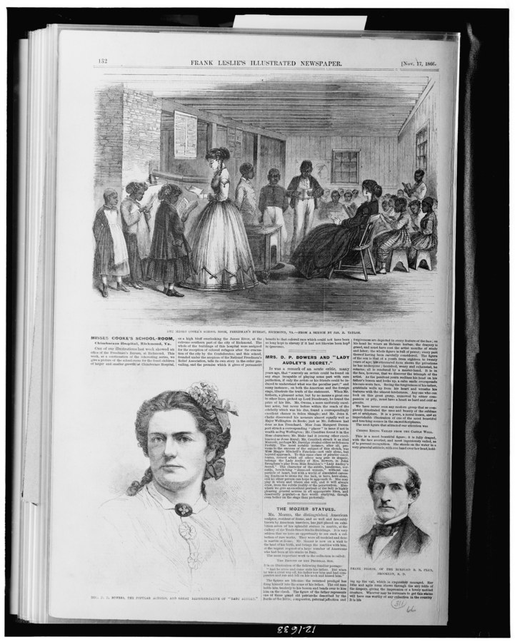

Directions: Fill in the chart as we study how freedom was defined in law, by freedpeople, and in statute. Keep this page in your notebook. You will use it again on the review day before the unit test.

| The definer | The record in this lesson | The definition it gives, and its evidence |
|---|---|---|
| The Constitution | ||
| Freedpeople in family life | ||
| The conventions | ||
| Congress in statute | ||
| The president in veto |
Law and life. Pick the conventions row and write a short paragraph on it. State two terms the conventions demanded that the law of 1866 had not granted by December of that year, and defend, from the lesson's records, whether those terms stood closer to grant or to refusal.
| The definer | The record in this lesson | The definition it gives, and its evidence |
|---|---|---|
| The Constitution | The Thirteenth Amendment, ratified when Georgia assented on December 6, 1865, and proclaimed on December 18, with Iowa assenting afterward on January 24, 1866. | Freedom as a condition abolished everywhere, slavery and involuntary servitude ended except as punishment for a crime, with Congress armed in Section 2 to enforce the ban by legislation. |
| Freedpeople in family life | The searches for sold kin through newspaper notices and letters, the marriages recorded in law, and the surnames chosen for the record in 1865 and 1866. | Freedom as a family made whole and recognized: a union and children legitimate in law, a name of one's own, wages for one's labor, and a school for one's children. |
| The conventions | The state conventions of 1865 and 1866, delegates elected across the South, issuing addresses and petitions to legislatures, Congress, and the president. | Freedom as a program: land or fair wages, family protection against forced apprenticeship, schools, repeal of the Black Codes, testimony and jury rights, and the ballot. Most petitions were received and left unacted on. |
| Congress in statute | Trumbull's Civil Rights Act of 1866, declaring birthright citizenship and equal civil rights, passed over Johnson's veto on April 6 and April 9, 1866. | Freedom as citizenship with enforceable civil rights, contract, suit, testimony, and property on the same terms white citizens enjoyed, resting on Section 2 of the amendment. |
| The president in veto | Johnson's veto message of March 27, 1866, returned to the Senate and answered by the override, with the Freedmen's Bureau fight ending the same way in July. | Freedom as a question for the states, in Johnson's account: Congress had no power to confer citizenship, eleven states stood unrepresented, and the bill discriminated in favor of the colored race. Congress rejected each claim by repassing the bill. |
Law and life. Strong answers name the ballot and land as the two ungranted terms, or family protection in its full form, and judge their standing from the records. The ballot stood nearer grant: Congress had shown in the override that it would act over the president, and the conventions' argument from service and taxes was already in print. Land stood nearer refusal: no station grants it, no bill of 1866 proposed it, and Johnson's restoration had been returning plantations to pardoned owners all year. Either weighting earns full credit when both terms are evidenced.